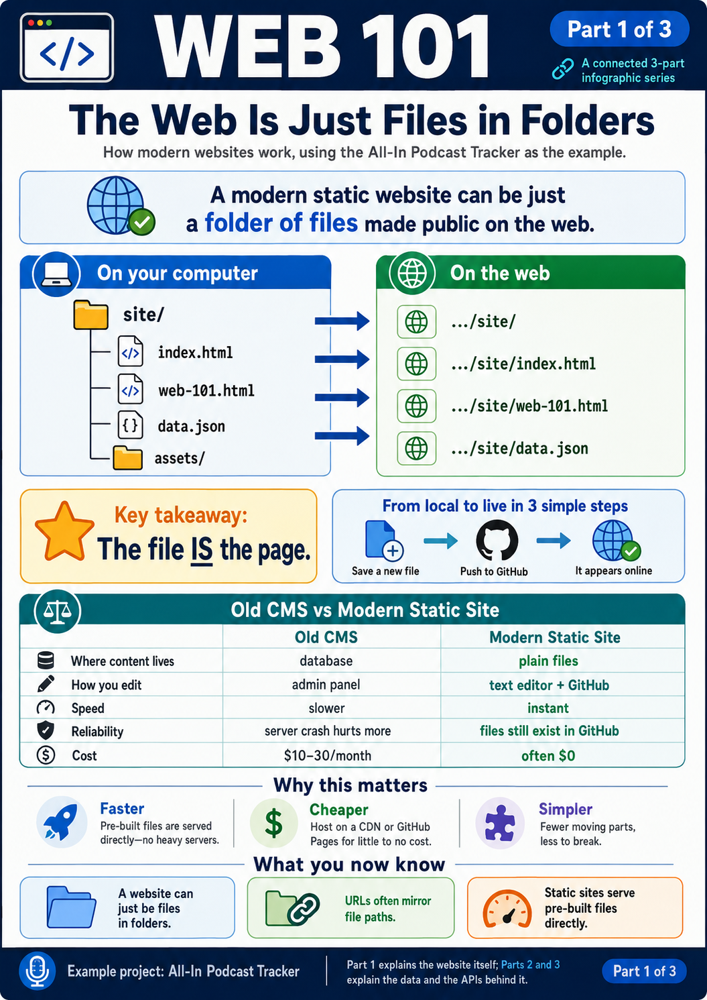
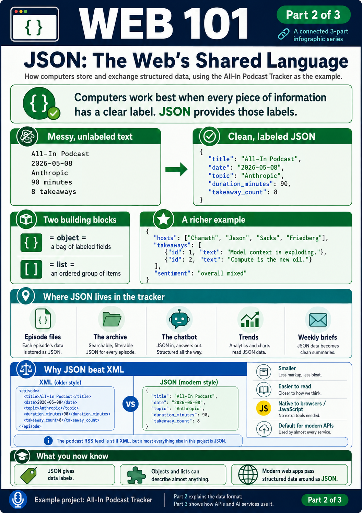
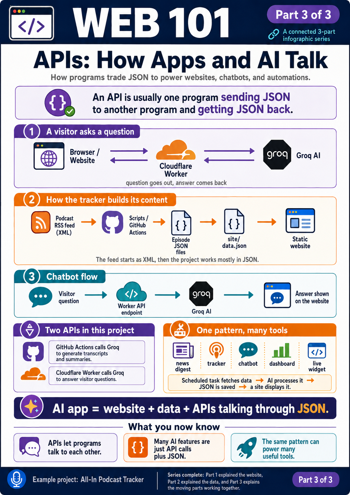

Building the All-In Podcast Tracker pulls back the curtain on three ideas that together explain a huge chunk of how the modern web works. Once you see them, most websites stop looking like magic and start looking like simple files in folders.
- Folders ARE URLs. The shape of files on a computer becomes the shape of a website.
- JSON is the language of structured data. A clean, simple way for computers to store and exchange information.
- APIs are just two programs trading JSON. Every "AI feature" or "live data" you see online is one program asking another for JSON.
This page walks through all three, with concrete examples from THIS project. No prior programming knowledge needed.
1. Folders that are also URLs
The simplest, most elegant idea behind modern static sites.

Open the Finder on your Mac and navigate to where this project lives. You'll see a folder structure. Now look at the URL of the public website. They are literally the same shape:
~/Documents/all-in-podcast-tracker/ becomes https://kr48vr.github.io/all-in-podcast-tracker/ ├── site/ → .../site/ │ ├── index.html → .../site/ (the default page) │ ├── how-it-works.html → .../site/how-it-works.html │ ├── web-101.html → .../site/web-101.html (this page!) │ ├── data.json → .../site/data.json │ └── config.js → .../site/config.js ├── src/ → .../src/ ├── data/ → .../data/ └── README.md → .../README.md
Every file in the repository is reachable at a URL that mirrors its path. Save a new file at site/hello.html on your Mac, push it to GitHub, and within a minute it appears at .../site/hello.html on the public internet. No "upload to server" step. No control panel. The file IS the page.
Compared to older web platforms
For most of the 2000s and 2010s, building a website meant using something like WordPress, Drupal, or Joomla (collectively called "Content Management Systems" or CMSes). Those work differently:
| Aspect | Old way (WordPress / CMS) | Modern static way (GitHub Pages, Cloudflare Pages, Netlify) |
|---|---|---|
| Where content lives | In a database (MySQL, Postgres) hidden inside the server | In plain files in a folder |
| How you edit a page | Log in to an admin panel, edit through a web form, save to database | Edit the file in any text editor, push to GitHub |
| How visitors see the page | Server generates HTML from database + templates on every visit | Pre-built HTML is served directly from disk |
| Speed | Slower (database query + template render per visit) | Instant (file already exists, just served) |
| If the server crashes | Whole site is down. Restore from backup. Hope database isn't corrupted. | Files still exist in GitHub. Nothing to restore. |
| Version history | Plugin-dependent, often clunky | Built into git: every change is a commit you can roll back |
| Cost | ~$10-30/month for hosting + database | $0 for typical use |
| Skills needed | WordPress admin, themes, plugins, sometimes PHP | A text editor and a few git commands |
The biggest mental shift: your website isn't a "thing running on a server." It's just a folder of files that some server hands out. Once you see that, half the mystery of the web evaporates.
2. JSON -- the language of structured data
A clean way for computers to write down information so other computers can read it.

Computers send each other data constantly. Your browser sends data to the podcast site. The podcast site sends data back. Your chatbot sends data to Groq. They all need a shared format. JSON (JavaScript Object Notation) is that format.
The core idea: instead of writing information as a blob of prose, you give every piece of information a label. Compare:
Without labels (just text)
All-In Podcast, May 8 2026, about Anthropic, 90 minutes, 8 takeaways
With labels (JSON)
{
"title": "All-In Podcast",
"date": "2026-05-08",
"topic": "Anthropic",
"duration_minutes": 90,
"takeaway_count": 8
}
Two simple building blocks make up all JSON:
- { } curly braces wrap an object -- a bag of labeled fields
- [ ] square brackets wrap a list -- an ordered series of things
You can nest them inside each other forever. Here's a richer episode example that shows a list inside an object, with each item itself being a small object:
{
"title": "All-In Podcast",
"date": "2026-05-08",
"hosts": ["Chamath", "Jason", "Sacks", "Friedberg"],
"takeaways": [
{"text": "Anthropic is exploding", "timestamp": 331},
{"text": "Elon-Sam lawsuit kicks off", "timestamp": 1620}
],
"sentiment": {
"overall": "mixed",
"notes": "Optimistic about Anthropic, cautious about regulation"
}
}
Where JSON lives in YOUR tracker
Pretty much every piece of structured data in this project is JSON:
- Each episode is stored as a JSON file in data/episodes/
- The whole archive is bundled into site/data.json for the website to read
- When your chatbot sends a question to Cloudflare, it's sending JSON
- When Groq's AI returns a summary, it returns JSON
- Trends, weekly briefs, all JSON underneath
You can see it for yourself: open site/data.json in your browser. That's the raw JSON your website loads.
3. The XML era and why JSON took over
A short history lesson that explains a lot of computing.
JSON wasn't always the default. From the late 1990s through the mid 2000s, the dominant format for exchanging structured data was XML (eXtensible Markup Language). Every enterprise system used it. SOAP web services, RSS feeds, configuration files, Microsoft Office formats -- all XML.
The instinct of XML was right: data needs structure. But the execution was heavy. Tags wrap everything, opening AND closing. Every concept seemed to have a separate standard. Here's the same episode written in XML on the left, JSON on the right:
XML version (460 characters)
<?xml version="1.0" encoding="UTF-8"?>
<episode>
<title>All-In Podcast</title>
<date>2026-05-08</date>
<hosts>
<host>Chamath</host>
<host>Jason</host>
<host>Sacks</host>
<host>Friedberg</host>
</hosts>
<takeaways>
<takeaway timestamp="331">
Anthropic is exploding
</takeaway>
<takeaway timestamp="1620">
Elon-Sam lawsuit kicks off
</takeaway>
</takeaways>
<sentiment overall="mixed">
Optimistic about Anthropic,
cautious about regulation
</sentiment>
</episode>
JSON version (305 characters)
{
"title": "All-In Podcast",
"date": "2026-05-08",
"hosts": ["Chamath", "Jason", "Sacks", "Friedberg"],
"takeaways": [
{"text": "Anthropic is exploding",
"timestamp": 331},
{"text": "Elon-Sam lawsuit kicks off",
"timestamp": 1620}
],
"sentiment": {
"overall": "mixed",
"notes": "Optimistic about Anthropic, cautious about regulation"
}
}
Same information. JSON is roughly 35% smaller, and that's before XML's typical production verbosity (namespaces, schemas, processing instructions) kicks in.
Why JSON took over (the table)
| Aspect | XML | JSON |
|---|---|---|
| One labeled field | <date>2026-05-08</date> |
"date": "2026-05-08" |
| A list of items | <hosts><host>Chamath</host><host>Jason</host></hosts> |
"hosts": ["Chamath", "Jason"] |
| Reading it in a web browser | var doc = new DOMParser().parseFromString(s, "application/xml");var date = doc.querySelector("date").textContent; |
var data = JSON.parse(s);var date = data.date; |
| Schema definition | Often required as a separate XSD or DTD file | None required -- just write your data |
| Comments allowed | <!-- this episode is cool --> |
No comment syntax (intentional) |
| Attributes vs children | Two ways: <tag attr="x">child</tag> |
One way: {"attr": "x", "child": "..."} |
| File size for same data | ~30 to 50% larger than JSON | Smaller, less to send over the network |
A bit of history
JSON wasn't invented from scratch. Douglas Crockford, an early web engineer, noticed in 2001 that JavaScript already had a perfectly good notation for objects built into the language. Instead of designing a new format, he wrote a tiny spec saying "let's use exactly this syntax for data exchange, and call it JSON."
Two things made JSON win between roughly 2005 and 2015:
- JavaScript was eating the web. Every browser already knew how to read JSON natively, because JSON IS JavaScript syntax. XML required a parser library.
- APIs exploded. Twitter, Facebook, Google, every "Web 2.0" company built APIs around 2006-2012. They picked JSON. New API designers followed. By 2015, JSON was the default.
XML didn't disappear -- it's still everywhere in legacy enterprise systems, government records, RSS feeds (including the podcast feed your tracker reads), Microsoft Office documents, and configuration files. But for anything new on the web, JSON has been the standard for over a decade.
4. How these three ideas fit together
Folders, URLs, JSON, and APIs all in one picture.

Your All-In Podcast Tracker is a tiny but complete example of modern web architecture. Look at it through three lenses:
- Folder view: on your Mac, you see folders and files. You edit them with a text editor. You move them around with Finder. They're just files.
- URL view: every public file has a web address. Visitors type the address in a browser, the file appears. No magic.
- JSON view: inside the files, the actual data is JSON. The whole archive lives as JSON. Every chat question and answer flows as JSON. Every analysis the AI produces returns as JSON.
There's a fourth lens too, that ties everything together: APIs. An API ("Application Programming Interface") sounds technical but it's the simplest idea of all -- it just means one program sends JSON to another and gets JSON back. That's it. That's the whole concept.
Your tracker has several APIs in play:
- GitHub Actions calls Groq's API -- sends JSON ("here's an audio file, please transcribe"), receives JSON ("here's the transcript")
- Cloudflare Worker calls Groq's API -- sends JSON ("here's a chat question and some context"), receives JSON ("here's the answer")
- Your website's browser calls the Cloudflare Worker's API -- sends JSON ("here's the visitor's question"), receives JSON ("here's the answer to display")
Every "AI app", "weather widget", "live stock ticker", "Uber map", "Spotify Now Playing" you've ever seen works the same way. A program asks another program for JSON. Both sides agree on what fields the JSON will contain. That's modern software in a sentence.
What you now know
By understanding three ideas (folders-as-URLs, JSON, APIs), you can see through most modern websites and tools:
- "How does this site update itself?" -- there's a script somewhere that fetches data (probably JSON over an API), saves it (probably as a JSON file in a folder), and a public folder serves the result.
- "How does this chatbot work?" -- a tiny server somewhere sends JSON to an AI service (an API), gets JSON back, and displays it.
- "Why is this site so fast?" -- probably static files in folders, served directly without a database or template engine.
- "Why do APIs use JSON?" -- because it's smaller than XML, native to every web browser, and works in every programming language.
- "What's the difference between a CMS and a static site?" -- a CMS runs code on every visit; a static site is pre-built files that just get served.
You also accidentally learned a fair amount of operational stuff that most hobbyist tools never expose:
- Version control -- every change is a commit you can roll back; nothing is permanent
- Scheduled tasks -- GitHub Actions cron jobs run code on a timer, without a server you maintain
- Rate limits -- free AI tiers cap how much you can use per minute and per day, and how to design for that
- Secrets handling -- the Cloudflare Worker pattern of "hide the API key behind a middleman" applies to every public-facing AI app
- Debugging from logs -- reading workflow output to figure out what succeeded, what timed out, what to fix next